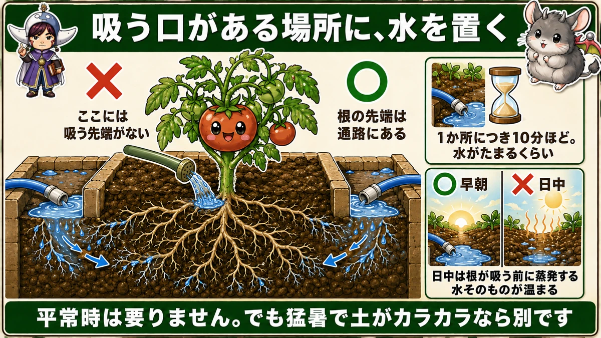
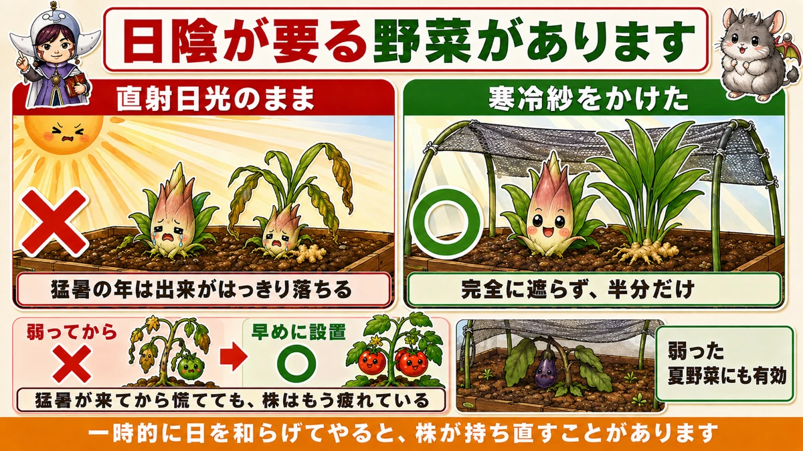
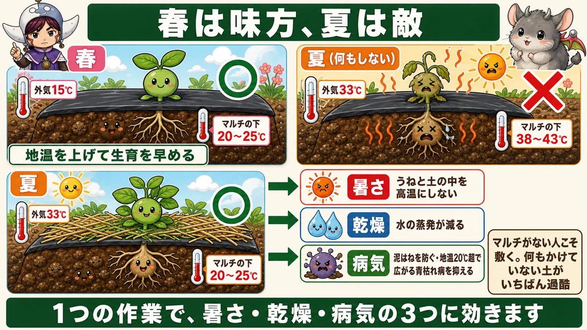

In a heatwave, water the path — not the plant 🔥 Three things for the crop, three for you

🔥 "I water every day and it still looks miserable."
🔥 "Once it passes 35 °C, nothing sets."
🔥 "It's too unpleasant to go out, so I stopped going."
Hello, I'm Eiko. Eight years of growing vegetables organically and without pesticides, and a teaching licence in science.
The headline:
Water the path, not the base of the plant.
I've written before that summer crops need far less water than people give them. That's still true — but a heatwave is different, and so is where the water goes.
What happens above 35 °C
Above 35 °C (95 °F) vegetables suffer physiological damage:
- Pollen dies and flowers aren't fertilised
- Fruit stops swelling
- The plant itself weakens
The plants haven't caught up either
This is the heart of it. Days above 35 °C used to be rare here, and the varieties we grow were bred for that climate. Regular heatwaves are very recent.
It isn't only people who find this unexpected — the plants do too. Which is exactly why intervening is worth it: protect them and you extend the picking season considerably.
① Water the path

What this diagram says （図解の文字）
- Put the water where the mouths are
- ✗ "there's no absorbing tip here" ／ ○ "the root tips are out under the path"
- "About ten minutes per spot — until it pools"
- ○ "dawn" ／ ✗ "midday — it evaporates before the roots take it, and the water itself heats up"
- "Normally you don't need to water. But if a heatwave has dried it out, that's different"
This doesn't contradict "don't water"
- Normal conditions — no watering needed. With a high ridge and mulch, the roots are spread and there's water in the soil. Don't judge by the dry surface
- A heatwave with the soil bone dry — different. There are limits, and when the sun has been on it for days and the inside of the ridge is drying, water it properly
But not at the base
Don't put it on the crown or the leaves — put plenty into the path between the ridges.
Why? Because the roots reach out there, and a root only absorbs at its tip. The tips are not at the stem; they're under the path.
Put the water where the mouths are. Exactly the same principle as feeding.
The quantity is about ten times what you'd guess
Lay a hose in the path and run it for about ten minutes per spot — until water pools.
That sounds like a lot. It surprised me too. But on a heatwave day, a modest amount of water dries in moments.
With a can or bucket, raise your sense of what "plenty" means. A wet surface has not reached the roots.
Do it at dawn
Water early. In the middle of the day:
- It evaporates before the roots take it up
- The water itself gets hot
Cool hours, where the roots are, plenty of it. That's heatwave watering.
② Shade cloth for half shade

What this diagram says （図解の文字）
- Some vegetables need shade
- ✗ "left in full sun" ／ ○ "under shade cloth"
- "In a hot year the crop is noticeably worse" ／ "don't block it completely — halve it"
- ✗ "after it weakens" → ○ "put it up early"
- "Also works on summer crops that have wilted" — "waiting until the heatwave arrives is too late; the plant is already tired"
Not every vegetable wants full sun. Myoga ginger and root ginger prefer half shade, and in a hot year their crop drops noticeably.
The method is simple: put shade cloth over them to create half shade.
Timing matters more than anything: put it up early, not after they weaken. Once the heatwave has arrived, the plant is already tired.
It also works on summer crops that have collapsed in the heat — easing the sun temporarily lets a plant recover. Don't block the light completely; halve it. Hence "half shade".
③ Straw on top of the mulch

What this diagram says （図解の文字）
- An ally in spring, an enemy in summer
- Spring — air 15 °C ○ under the mulch 20–25 °C — "raises soil temperature and speeds growth"
- Summer, nothing done — air 33 °C ✗ under the mulch 38–43 °C
- Summer, with straw — air 33 °C ○ under the mulch 20–25 °C
- "Heat → keeps the ridge and the soil from overheating" ／ "drying → less water lost"
The most useful and most overlooked move of the three.
Under black mulch it runs 5–10 °C (9–18 °F) above air temperature. In spring that's an ally — it warms the soil and speeds things up. In summer it's the opposite.
Just lay it on top
Spread straw or cut weeds on top of the black mulch. Two aims:
- Keep the ridge surface from getting hot
- Keep the soil from getting hot
That prevents damaged shoots and a generally weakened plant.
If you don't use mulch, do this especially
Bare ground gets hotter still, and dries out worse. Straw alone lowers the surface temperature and reduces evaporation. Uncovered soil is the harshest place of all.
It's also disease control
Bacterial wilt spreads readily once soil temperature passes 20 °C (68 °F) — so lowering the soil temperature is disease control in itself.
And straw stops soil splashing, which is the way powdery and downy mildew get onto leaves.
One job, three effects: heat, drying and disease. Well worth the effort.
Three things for you
What this diagram says （図解の文字）
- If you can't get to the plot, nothing else starts
- "Acclimatise before summer arrives" — ✗ "choosing only the cool days means you never adapt"
- "Get some sleep" — "sleeping the night before is itself the preparation"
- "45 minutes of work, 15 minutes of rest" — "don't put the break off"
Not about the vegetables. No management of any kind happens if you can't get out there. Three things I do — not medical advice, just what makes it sustainable.
1. Acclimatise before the summer arrives
The one I think matters most. Work outside on the warm days before it gets hot.
Choose only the cool and cloudy days and your body never adapts — then high summer arrives and you step straight into it. That's what really hurts.
Nothing special required: tying in, weeding, making beds. Just do the ordinary jobs on a slightly hot day.
2. Sleep
A late night means you can't handle the next day's heat. Garden work is mostly early, so sleeping the night before is the preparation. Obvious, and I've suffered several times for neglecting it.
3. 45 minutes on, 15 minutes off
Work for 45 minutes, rest 15 in the shade, repeat.
The trick is not to postpone the break. Rest while you still think you're fine.
And drink. A cool flask of iced tea, and a sports drink with salt in it is useful too. Have something cold available all day — that alone is what lets you keep working.
Continuing is the thing
The real waste in a hot summer is stopping altogether. Push too hard in July and you don't go at all in August. Steady 45-minute sessions get far more done.
Like the vegetables: don't overwork it and it keeps going longer.
To sum up
- ✅ Above 35 °C, pollen dies and fruit stops swelling
- ✅ Protect them and the picking season lasts longer
- ✅ Normally no watering — but a heatwave with dry soil is different
- ✅ Water the path, not the crown. The root tips are out there
- ✅ Ten minutes per spot, until it pools. At dawn
- ✅ Shade cloth for half shade — put it up early, halve the light
- ✅ Straw on top of the mulch. Under black film it's 5–10 °C hotter
- ✅ Bare soil is the harshest of all
- ✅ Lower soil temperature = disease control, and straw stops splash
- ✅ For you: acclimatise early, sleep, 45 on / 15 off
You don't have to do all of it. Tomorrow at dawn, put the hose in the path and leave it ten minutes. That's the whole change 🔥
Thank you for reading!